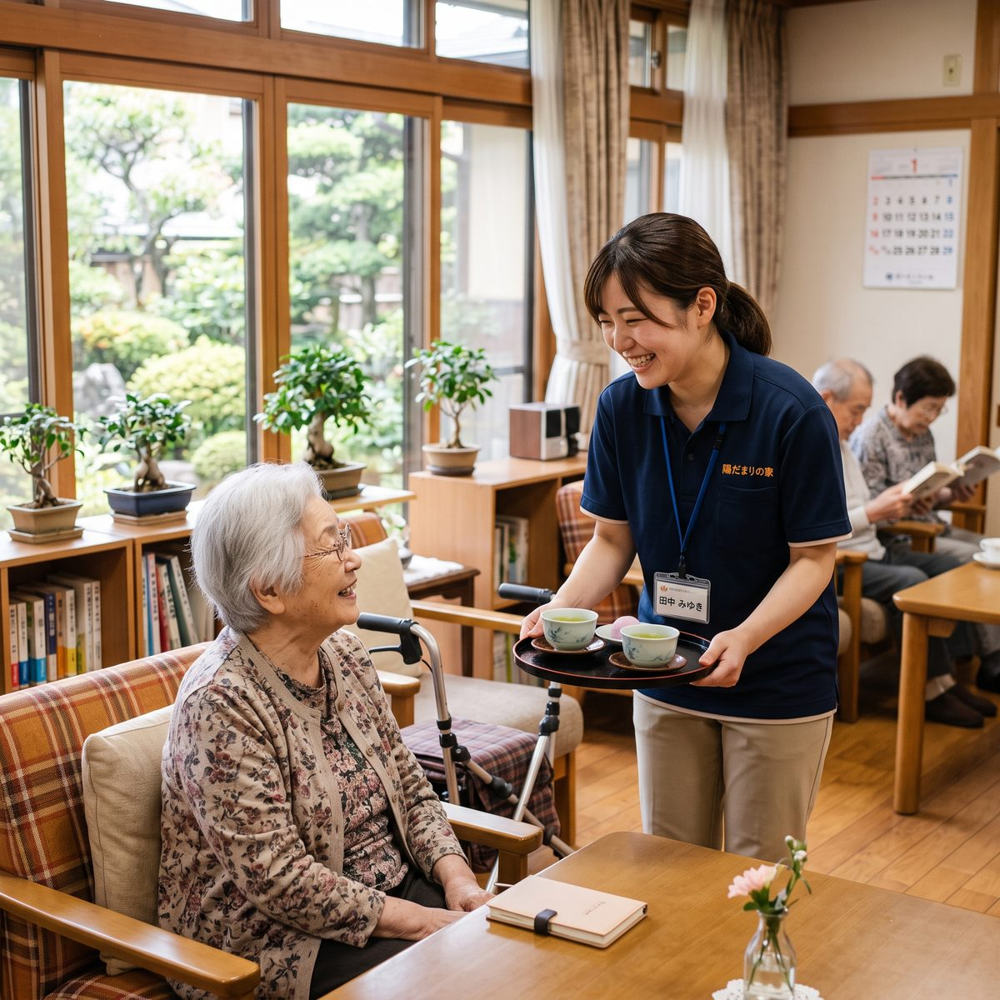
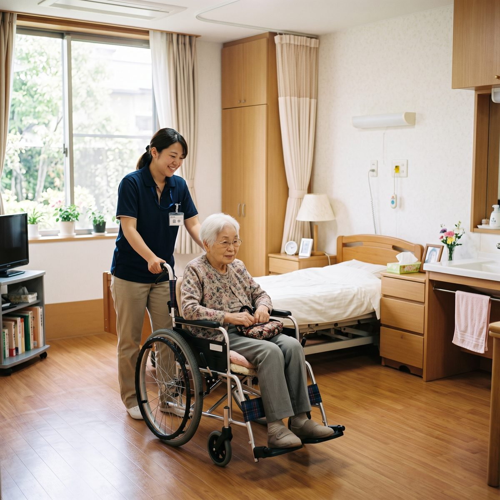
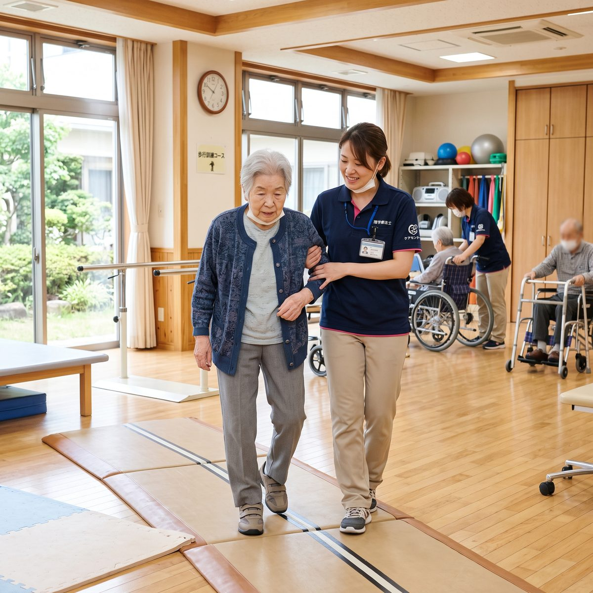

働く人の声あり職員構成を公開

掲載写真 5枚（デモページのためイメージ写真を繰り返し表示しています）
定員9名の少人数ホーム。1年かけて現管理者から運営を引き継いでいただきます
現ホーム長 / 在職7年目
前職：特別養護老人ホームのユニットリーダー
9名という規模なので、入居者様それぞれの生活歴まで踏まえたケアができます。管理者になると収支やシフトも見ることになりますが、法人の担当者が月1回入って一緒に数字を見てくれるので、いきなり丸投げということはありません。
※デモページのため、掲載している声は架空のサンプルです。
| 業務内容 | 介護業務全般の統括、スタッフのシフト管理・育成、収支管理の補助、行政対応・実地指導の窓口をお任せします。入職後1年は介護業務と並行して引き継ぎを行います。 |
|---|---|
| 管理者就任までの流れ | 入職〜6ヶ月は介護職として現場を把握し、7ヶ月目以降シフト作成・収支管理を段階的に引き継ぎます。 |
| 募集背景 | 現ホーム長の定年退職に伴う後任候補の採用 |
モデル月収の内訳330,000円
| 基本給 | 245,000円 〜 295,000円 |
|---|---|
| 役職手当 | 20,000円 〜 30,000円（管理者就任後） |
| 住宅手当 | 最大 20,000円 |
| 賞与 | 年2回・計4.2ヶ月分（前年度実績） |
※ 管理者就任後・経験5年の場合のモデル月収 330,000円（賞与は別途 年2回・計4.2ヶ月分）
| 雇用形態 | 正社員（試用期間6ヶ月・条件変更なし） |
|---|---|
| 勤務時間 | シフト制（実働8時間・休憩60分）／管理者就任後は原則日勤 |
| 休日休暇 | シフト制、年間休日115日、有給休暇、夏季・年末年始休暇あり |
| 必要資格 | 介護福祉士必須／実務経験3年以上／認知症介護実践者研修修了者は優遇 |
| 福利厚生 | 社会保険完備、住宅手当、車通勤可、資格手当、法人内管理者研修 |
| 勤務地 | 福岡県福岡市◯◯区 |
| アクセス | 最寄駅から徒歩12分／車通勤可 |
| 法人名 | 社会福祉法人 結會（2004年設立・福岡県内6事業所） |
|---|---|
| 施設種別 | 認知症対応型共同生活介護（グループホーム／1ユニット9名） |
| 職員構成 | 介護職員11名（うち介護福祉士7名）／計画作成担当者1名／ホーム長1名 |
| 引き継ぎ体制 | 現ホーム長が1年かけて運営業務を移管（定年退職に伴う後任） |
| 平均年齢 | 40.7歳 |
会員登録は不要です。応募フォームに必要事項を入力いただくだけで、掲載施設へ直接応募できます。
掲載施設の採用担当者より、3営業日以内にご連絡します。
応募フォームの「ご質問・ご要望」欄にご記入ください。応募の可否を決める前の質問としてお伝えします。

